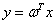
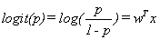

TensorFlow中的几种交叉熵
Logit函数
在线性回归中，，是用直线去拟合数据，实现最小二乘意义下的最小预测误差。
在逻辑回归中：可以看作是用直线去拟合Logit函数，通过极大似然估计出参数，使得在该参数下，能以最大概率生成当前的样本。
logits函数是一种将取值范围在[0,1]内的概率映射到实数域[-inf,inf]的函数，如果p=0.5，函数值为0；p<0.5，函数值为负；p>0.5，函数值为正。
相对地，softmax和sigmoid则都是将[-inf,inf]映射到[0,1]的函数。
在tensorflow里的”logits”指的其实是，该方法是在logit数值上使用softmax或者sigmoid来进行normalization的，也暗示用户不要将网络输出进行sigmoid或者softmax，这些过程可以在函数内部更高效地计算。
独立和互斥
有事件A和B
独立：P(AnB) = P(A) * P(B)
互斥：P(AUB) = P(A) + P(B), P(AnB) = 0
1、tf.nn.sigmoid_cross_entropy_with_logits
1 | sigmoid_cross_entropy_with_logits( |
计算网络输出logits和标签labels的sigmoid cross entropy loss，衡量独立不互斥离散分类任务的误差，说独立不互斥离散分类任务是因为，在这些任务中类与类之间是独立但是不互斥的，拿多分类任务中的多目标检测来举例子，一张图中可以有各种instance，比如有一只狗和一只猫。对于一个总共有五类的多目标检测任务，假如网络的输出层有5个节点，label的形式是[1,1,0,0,1]这种，1表示该图片有某种instance，0表示没有。那么，每个instance在这张图中有没有这显然是独立事件，但是多个instance可以存在一张图中，这就说明事件们并不是互斥的。所以我们可以直接将网络的输出用作该方法的logits输入，从而进行输出与label的cross entropy loss。
更加直白的来说，这种网络的输入不需要进行one hot处理，网络输出即是函数logits参数的输入。
剖开函数内部，因为labels和logits的形状都是[batch_size, num_classes]，那么如何计算他们的交叉熵呢，毕竟它们都不是有效的概率分布（一个batch内输出结果经过sigmoid后和不为1）。其实loss的计算是element-wise的，方法返回的loss的形状和labels是相同的，也是[batch_size, num_classes]，再调用reduce_mean方法计算batch内的平均loss。所以这里的cross entropy其实是一种class-wise的cross entropy，每一个class是否存在都是一个事件，对每一个事件都求cross entropy loss，再对所有的求平均，作为最终的loss。
2、tf.nn.softmax_cross_entropy_with_logits
1 | softmax_cross_entropy_with_logits( |
计算网络输出logits和标签labels的softmax cross entropy loss，衡量独立互斥离散分类任务的误差，说独立互斥离散分类任务是因为，在这些任务中类与类之间是独立而且互斥的，比如VOC classification、Imagenet、CIFAR-10甚至MNIST，这些都是多分类任务，但是一张图就对应着一个类，class在图片中是否存在是独立的，并且一张图中只能有一个class，所以是独立且互斥事件。
该函数要求每一个label都是一个有效的概率分布，对于Imagenet中的ILSVRC2012这种任务，那么label应该就对应一个one hot编码，ILSVRC2012提供的数据集中一共有1000个类，那么label就应该是一个1x1000的vector，形式为[0,0,…,1,0,….0]，1000个元素中有且只有一个元素是1，其余都是0。
这样要求的原因很简单，因为网络的输出要进行softmax，得到的就是一个有效的概率分布，这里不同与sigmoid，因为sigmoid并没有保证网络所有的输出经过sigmoid后和为1，不是一个有效的概率分布。
有了labels和softmax后的logits，就可以计算交叉熵损失了，最后得到的是形状为[batch_size, 1]的loss。
3、tf.nn.sparse_softmax_cross_entropy_with_logits
1 | sparse_softmax_cross_entropy_with_logits( |
这个版本是tf.nn.softmax_cross_entropy_with_logits的易用版本，这个版本的logits的形状依然是[batch_size, num_classes]，但是labels的形状是[batch_size, 1]，每个label的取值是从[0, num_classes)的离散值，这也更加符合我们的使用习惯，是哪一类就标哪个类对应的label。
如果已经对label进行了one hot编码，则可以直接使用tf.nn.softmax_cross_entropy_with_logits。
4、总结：
到底是用sigmoid版本的cross entropy还是softmax版本的cross entropy主要取决于我们模型的目的，以及label的组织方式，这个需要大家在使用的时候去揣摩，到底使用哪一种loss比较合理。
在我最近训练的segmentation模型中，使用的就是sparse softmax cross entropy，使用的思路就是将输出的结果从NHWC（这里C=1，表示该pixel所属的class），进行一次reshape，形状变为[NHW, 1]，label也是如此，传入函数中进行计算，从而产生loss。从模型训练的结果来看，这种使用方法没有错误。